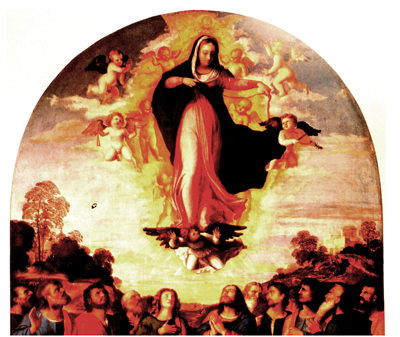

Back to Dangling String Previous Photo Begin Photo
All images on these pages are copyright © 1999 by Holly Smith Pedlosky
To learn more, send e-mail to hollyp@cape.com
|
Would you like to meet some more Venetian housewives? | Would you like to see some more Laundry? | Would you like to find out more about laundry, cloth, and draped fabric in Venetian art? |